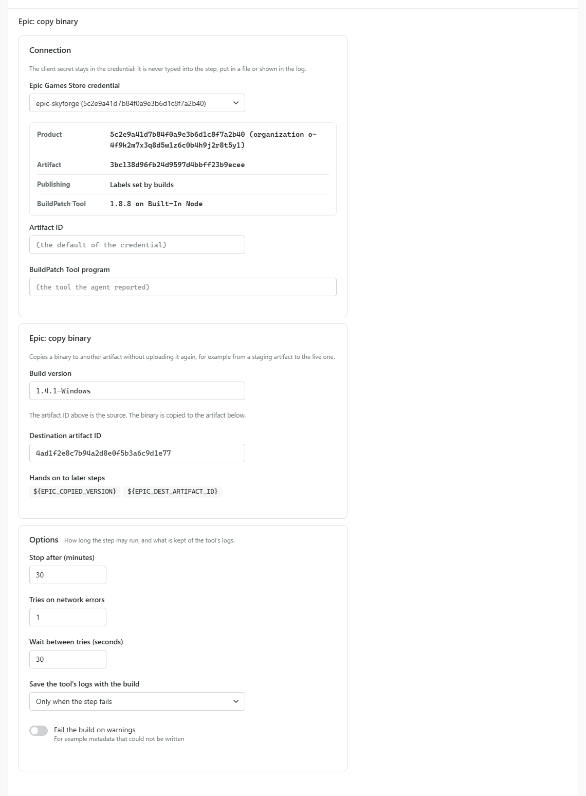

Epic: copy binary
Copy a binary from one artifact to another on Epic, without uploading it again.
When to use it
Use it when you test a build on a staging artifact first and then want the same build on the live artifact. Copying is fast because nothing is uploaded again.
Every Epic step runs the Epic BuildPatch Tool on the agent. The agent needs the tool: see Install BuildPatch Tool. A step that needs a newer tool than the agent has stops with a message that names the version the agent has.
How to set it up
- Open the build configuration, then Settings › Build steps › Add build step.
- Type
Epicin Filter step types and click Epic: copy binary. - Pick the credential. Type the Artifact ID of the source in Artifact ID.
- Type the Build version and the Destination artifact ID.
- Click Save.

Every field
Connection
| Field | What it does | Default | Example |
|---|---|---|---|
| Epic Games Store credential | The credential that holds your BuildPatch Tool keys. The list shows the credentials you may use. The secret is never typed in the step, never written to a file and never shown in the log. | None. The step fails if you pick nothing. | Epic Store (Skyforge) |
| Artifact ID | The Epic artifact to work on. Leave it empty to use the Default artifact ID of the credential. | Empty (the credential default) | 0f2b8a6c9d1e4c37a5e8b1d6c2f94a70 |
| BuildPatch Tool program | The full path of the BuildPatch Tool program on the agent. Leave it empty to use the tool the agent reported. | Empty (the tool the agent reported) | D:/Tools/BuildPatchTool/BuildPatchTool.exe |
For this step the artifact ID above is the source.
Epic: copy binary
| Field | What it does | Default | Example |
|---|---|---|---|
| Build version | The version of the binary to copy. | Empty | 1.4.57-Windows |
| Destination artifact ID | The artifact the binary is copied to. It must not be the same as the source. | Empty (required) | 7e3c1b9a5d2f48c6b0a4e8d1f5c2a936 |
Options
| Field | What it does | Default | Example |
|---|---|---|---|
| Stop after (minutes) | The step is stopped after this time. | 30 | 30 |
| Tries on network errors | How many times the step runs BuildPatch Tool when it fails because of a network problem. A wrong key or a missing permission is never tried again. | 1 | 3 |
| Wait between tries (seconds) | The pause between two tries. | 30 | 60 |
| Save the tool’s logs with the build | Whether the logs BuildPatch Tool wrote on the agent are kept as build artifacts in epic-logs. Choices: Only when the step fails, Always, Never. | Only when the step fails | Always |
| Fail the build on warnings | Fails the step when BuildPatch Tool gave warnings, for example when metadata could not be written. Without it, warnings only show in the log. | Off | On |
Hands on to later steps
| Name | What it holds |
|---|---|
EPIC_COPIED_VERSION | The version that was copied. |
EPIC_DEST_ARTIFACT_ID | The artifact it went to. |
A worked example
QA tested 1.4.57-Windows on the staging artifact Skyforge Windows Staging. A build named Epic Promote copies it to the live artifact: credential Epic Store (Skyforge), Artifact ID the staging ID, Build version 1.4.57-Windows, Destination artifact ID the live ID. A label step then puts it live.
What you see when it runs
Epic: credential Epic Store (Skyforge), product 8c1d5f, artifact 0f2b8a..., Publishing: Labels set by builds Epic: copy version 1.4.57-Windows from artifact 0f2b8a... to artifact 7e3c1b... Epic: Step output EPIC_COPIED_VERSION = 1.4.57-Windows Epic: Step output EPIC_DEST_ARTIFACT_ID = 7e3c1b...
Problems and fixes
| Message | What to do |
|---|---|
| The destination artifact ID is required | Fill in Destination artifact ID. |
| The source and the destination are the same artifact | The destination must differ from the source. Check both IDs. |
| Epic says the Client ID has no permission for the artifact | The credential must be allowed on both artifacts. Ask the person who runs the Developer Portal. |